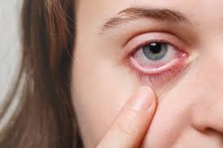
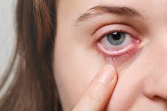

EYE TRACK
DETEKSI KELELAHAN PADA REMAJA
Pemeriksaan kelelahan mata penting dilakukan secara rutin untuk mencegah gangguan penglihatan.
Remaja sering terpapar layar digital sehingga berisiko mengalami kelelahan mata digital.
Deteksi dini membantu menjaga kesehatan mata dan meningkatkan produktivitas belajar.
 

Tekan tombol Next untuk memulai.
Sistem akan mendeteksi mata menggunakan kamera selama 2 menit.
Hasil deteksi dan saran pemeriksaan mata akan ditampilkan setelahnya.
ANATOMI MATA
PATOFISIOLOGI MATA
- Penglihatan: Menerima cahaya dan mengubahnya menjadi sinyal listrik ke otak.
- Mengatur Intensitas Cahaya: Pupil mengatur cahaya masuk dikontrol oleh iris.
- Mendeteksi Warna dan Bentuk: Retina mengandung sel peka cahaya.
- Mengirimkan Informasi ke Otak: Melalui saraf optik diinterpretasikan menjadi gambar.
FISIOLOGI MATA
1. Asthenopia (Kelelahan Mata)
Gejala: mata pegal, kabur, sulit fokus, sakit kepala.
2. Computer Vision Syndrome
Gejala: mata kering, kabur, sakit kepala, tegang leher.
3. Sindrom Mata Kering
Gejala: mata terasa panas, kering, gatal, penglihatan kabur.
4. Penglihatan Kabur Sementara
Gejala: fokus dekat ke jauh terganggu, kabur sesaat.
5. Sakit Kepala Tegangan Visual
Gejala: nyeri di pelipis dan mata, mata lelah.
Tips Pencegahan: Aturan 20-20-20, istirahat mata, pencahayaan baik, tetes mata, koreksi lensa.
APA SIH YANG SEBENARNYA KALIHAN KETAHUI TENTANG MATA??
Organ kecil ini ternyata menyimpan banyak keajaiban lho! Mata bukan hanya sekadar alat untuk melihat, tetapi juga merupakan sistem biologis yang sangat kompleks dan menakjubkan. Yuk, kita baca dan simak bersama penjelasan tentang bagaimana mata bekerja, apa saja bagian-bagiannya, serta gangguan-gangguan yang bisa memengaruhi fungsinya.